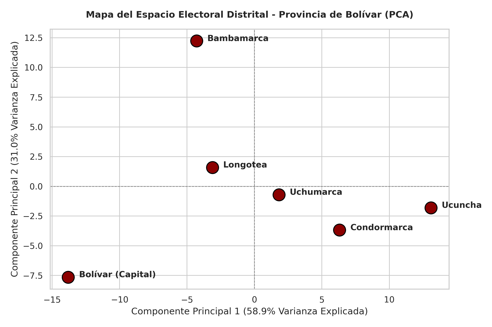
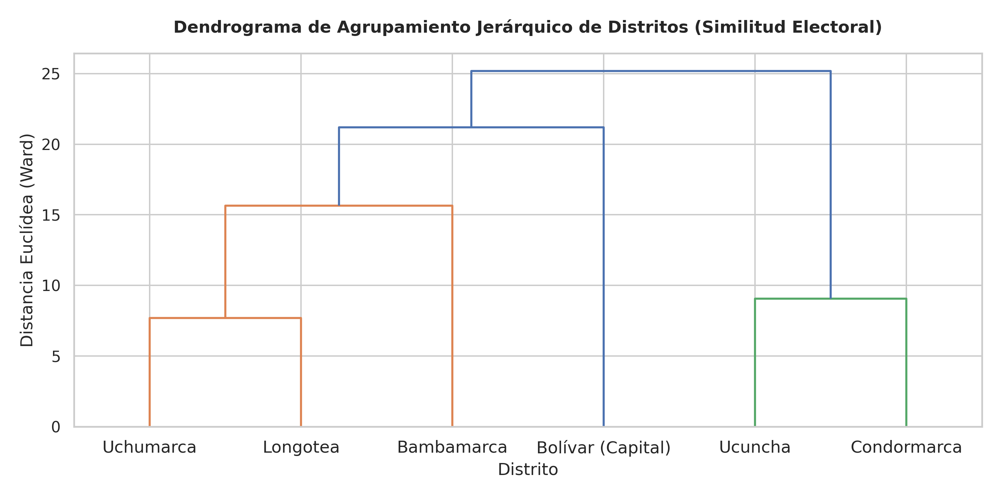

Prueba Estadística de Chi-Cuadrado (\(\chi^2\))
Estadístico \(\chi^2\)
9,476.14
Interpretación: La relación entre el distrito geográfico y la preferencia partidaria es altamente significativa. Existe una fuerte concentración territorial del voto.
Feudos y Sobrerrepresentación (Residuos Ajustados de Haberman \(Z > +1.96\))
Ucuncha
- • Fuerza Popular: Residuo = +46.84
- • Partido Cívico Obras: Residuo = +14.79
- • APRA: Residuo = +9.07
Bolívar (Capital)
- • Partido del Buen Gobierno: Residuo = +38.18
- • Renovación Popular: Residuo = +28.98
- • Primero La Gente: Residuo = +21.80
Uchumarca
- • Alianza para el Progreso: Residuo = +35.30
- • Fuerza Popular: Residuo = +10.73
- • Juntos por el Perú: Residuo = +5.61
Bambamarca
- • Juntos por el Perú: Residuo = +14.08
- • Somos Perú: Residuo = +5.04
Longotea
- • Juntos por el Perú: Residuo = +14.03
- • APP: Residuo = +11.89
- • APRA: Residuo = +6.46
Condormarca
- • Fuerza Popular: Residuo = +15.84
- • Podemos Perú: Residuo = +5.32
Análisis de Componentes Principales (PCA) y Clustering
Agrupación de distritos según la similitud de su comportamiento político-electoral.
Mapa del Espacio Electoral (PCA)

Dendrograma de Similitud (Clustering)
